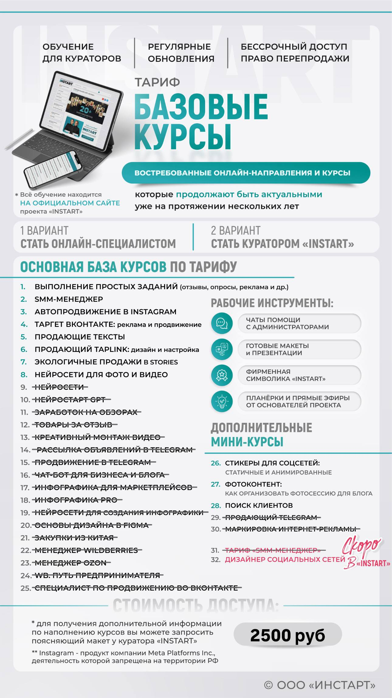
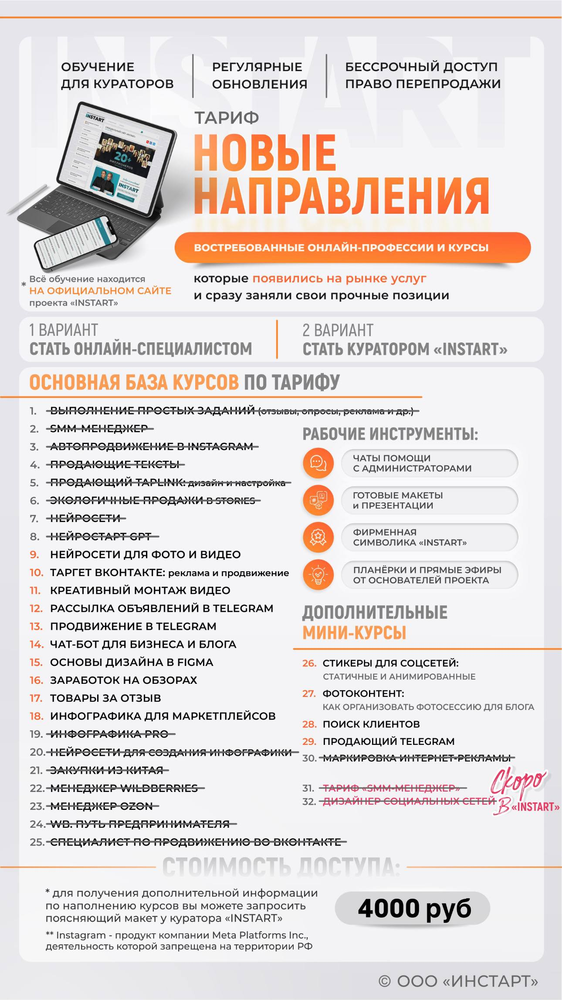
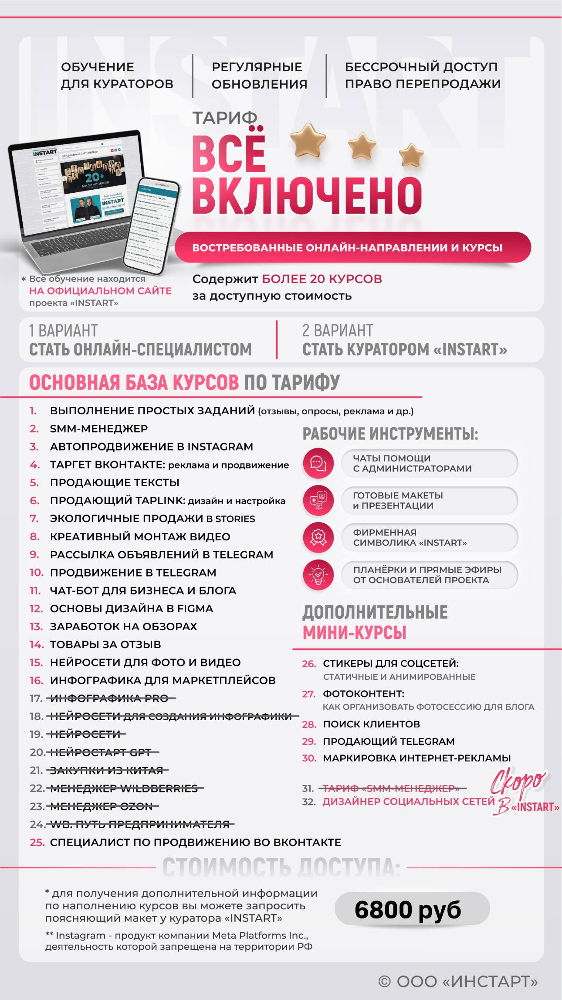
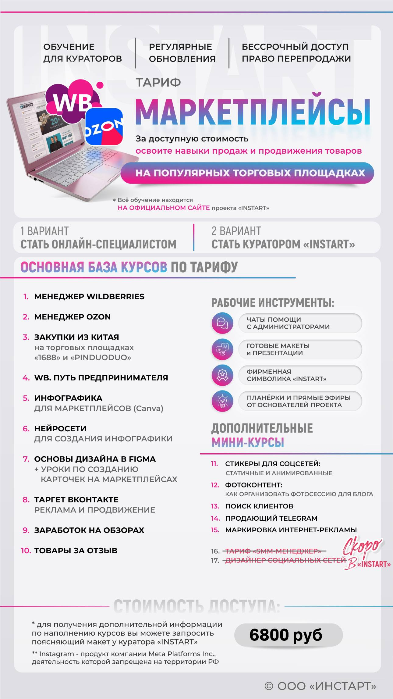
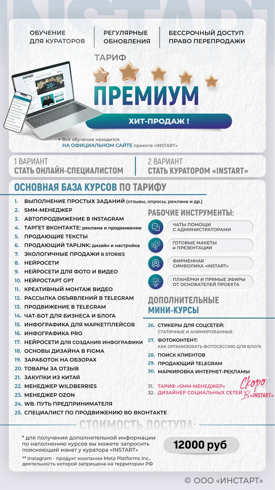
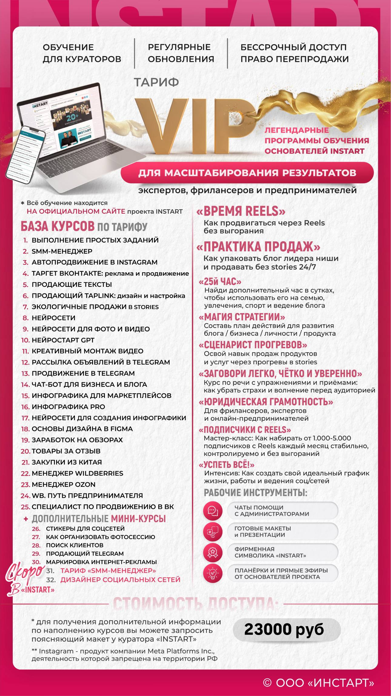
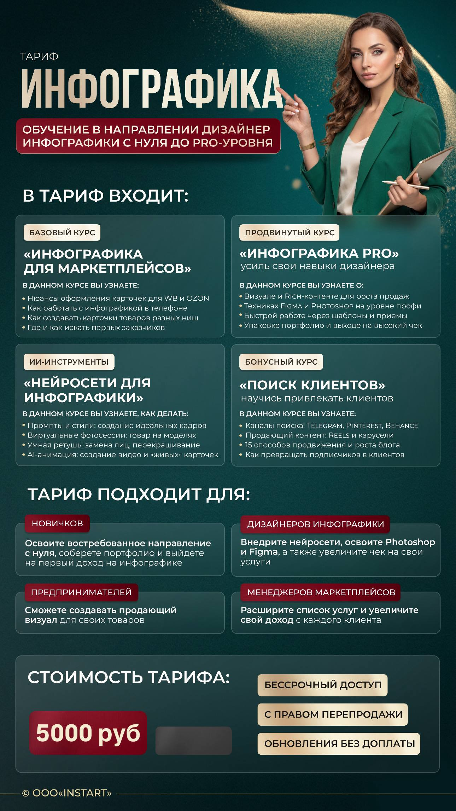

Возможно, ты сейчас тоже об этом думаешь
Хочется свои деньги
Чтобы не зависеть полностью от работы, графика, декрета или чужих решений.
Хочется больше времени
На ребёнка, семью, себя и обычную жизнь, а не только на дорогу и работу.
Страшно начинать
Непонятно, что выбрать, хватит ли времени и получится ли разобраться с нуля.
Что такое InSTART
Это платформа, где собрано много направлений для удалённой работы в одном месте. Ты не покупаешь один курс на одну тему — у тебя есть возможность попробовать разные навыки и понять, что тебе ближе.
Навсегда
Уроки доступны сразу после оплаты. Можно учиться сейчас, сделать паузу и вернуться позже.
Без доплат
Если на платформе появляются новые уроки или обновления, они добавляются бесплатно.
Практики
Уроки записаны действующими специалистами в конкретной сфере, а не одним человеком обо всём.
Что можно изучать внутри
Можно выбрать одно направление или совмещать несколько навыков между собой.
Ты не останешься одна
Я как куратор платформы остаюсь с учениками на связи. У нас есть общий чат всех учеников, где мы общаемся, задаём вопросы, делимся информацией и помогаем друг другу.
Не нужно сидеть за обучением целыми днями
Многие девушки проходят обучение в декрете или параллельно с работой. Ты сама выбираешь, когда учиться и сколько времени уделять. Даже 20–30 минут в день — уже нормальный старт.
Тарифы платформы
Для комфортного старта есть разные тарифы. Стоимость зависит от наполнения и количества курсов внутри. На всех тарифах доступ бессрочный, обновления без доплат, есть обучение для кураторов и право перепродажи.








Сколько можно зарабатывать удалённо
Каждый день девушки внутри платформы делятся в чате своими результатами. Кто-то берёт первые небольшие заказы, кто-то делает удалённую работу дополнительным доходом, кто-то постепенно переходит в онлайн полностью.
Ниже можно добавить скриншоты из чата. Это будут не обещания, а живые примеры того, какие результаты получают ученицы, когда начинают применять навыки.
Как всё проходит
Заявка
Ты оставляешь заявку, и мы спокойно обсуждаем, что тебе интересно и какой у тебя сейчас график.
Выбор тарифа
Я помогаю выбрать тариф, который подойдёт по наполнению и цели.
Доступ
После оплаты ты получаешь доступ к платформе и можешь сразу начинать обучение.
Обучение
Смотришь уроки в записи тогда, когда удобно. Без расписания и спешки.
Поддержка
Если появляются вопросы, есть общий чат и связь со мной как с куратором.
Первые шаги
Я помогаю понять, где искать клиентов и как начать предлагать свои услуги.
Немного обо мне
Меня зовут Анастасия. Я живу в небольшом посёлке возле Волги и уже больше 4 лет работаю удалённо.
Сейчас я работаю маркетологом на Wildberries, освоила несколько онлайн-направлений и сама выстраиваю свой график. Я могу работать из дома, уделять время семье и не быть привязанной к офису или месту проживания.
Фактически я живу в посёлке и получаю доход на уровне хорошей городской зарплаты благодаря удалённой работе. Поэтому мне хочется показать другим девушкам, что начать реально даже без опыта и идеальных условий.
Частые вопросы
А если я вообще ничего не умею?
Это нормально. Многие начинают с нуля. Для этого и есть уроки, поддержка и понятный порядок действий.
А если у меня маленький ребёнок?
Можно учиться в своём темпе: вечером, днём, по выходным или по 20–30 минут, когда получается.
Курсы точно бессрочные?
Да. Доступ к урокам остаётся навсегда. Ты можешь начать сразу, сделать паузу и вернуться позже.
Когда я получу доступ к обучению?
Доступ открывается после оплаты. Уроки уже записаны, поэтому не нужно ждать старта потока.
А если я не знаю, что выбрать?
Я помогу выбрать тариф и направление под твой график, интересы и цель.
Помогаете ли вы с клиентами?
Да. Я помогаю каждому ученику понять, где искать клиентов, как начать и как применять полученные навыки.